Throughout the preceding sections, the uncertainties in the supplied target values  have been denoted (see Section D.1). The user has the option of supplying these in the source datafile, in which case the provisions of the previous sections are now complete; both best-estimate parameter values and their uncertainties can be calculated. The user may also, however, leave the uncertainties in unstated, in which case, as described in Section D.1, we assume all of the data values to have a common uncertainty 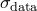, which is an unknown.
have been denoted (see Section D.1). The user has the option of supplying these in the source datafile, in which case the provisions of the previous sections are now complete; both best-estimate parameter values and their uncertainties can be calculated. The user may also, however, leave the uncertainties in unstated, in which case, as described in Section D.1, we assume all of the data values to have a common uncertainty 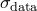, which is an unknown.
In this case, where 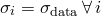, the best fitting parameter values are independent of , but the same is not true of the uncertainties in these values, as the terms of the Hessian matrix do depend upon . We must therefore undertake a further calculation to find the most probable value of , given the data. This is achieved by maximising 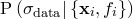. Returning once again to Bayes’ Theorem, we can write:
| 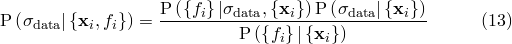 | (D.17) |
As before, we neglect the denominator, which has no effect upon the maximisation problem, and assume a uniform prior 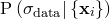. This reduces the problem to the maximisation of 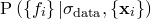, which we may write as a marginalised probability distribution over 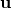:
| 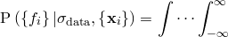 | 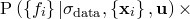 | (D.18) | |||
| 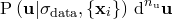 |  |
Assuming a uniform prior for , we may neglect the latter term in the integral, but even with this assumption, the integral is not generally tractable, as 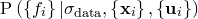 may well be multimodal in form. However, if we neglect such possibilities, and assume this probability distribution to be approximate a Gaussian globally, we can make use of the standard result for an 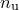-dimensional Gaussian integral:
| 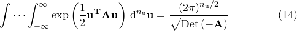 | (D.19) |
We may thus approximate equation () as:
| 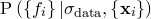 | 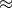 | 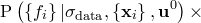 | (D.20) | ||
| 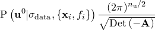 |
As in Section D.2, it is numerically easier to maximise this quantity via its logarithm, which we denote 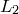, and can write as:
| 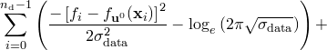 | (D.21) | ||||
| 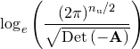 |
This quantity is maximised numerically, a process simplified by the fact that 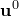 is independent of .